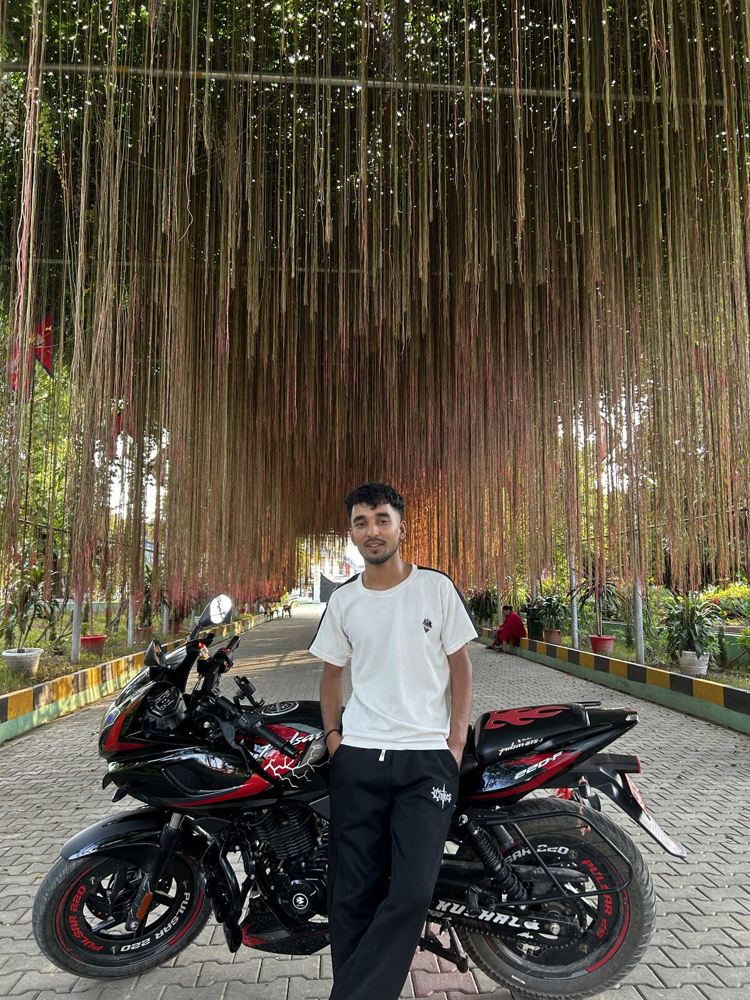
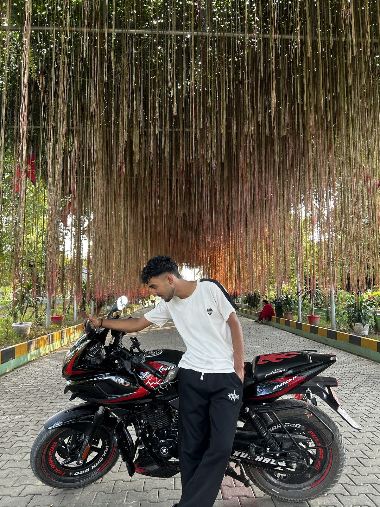
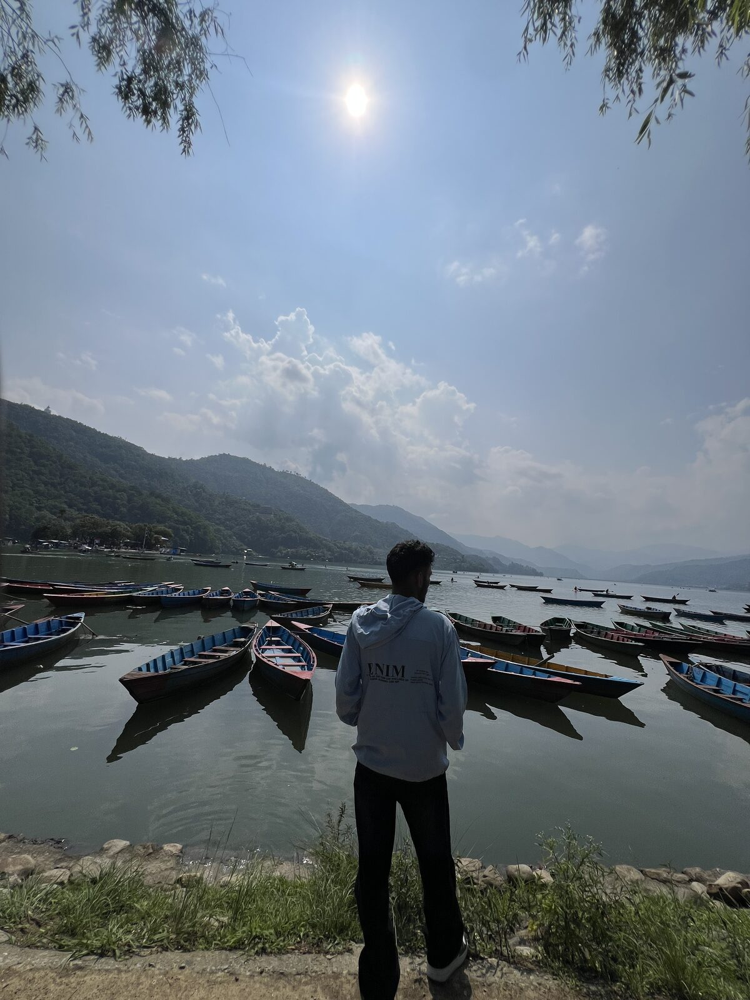

The Person Behind the Code
A curious mind from the hills of Gulmi, Nepal — learning, building, and growing every day.

I'm Kushal Bhandari
A driven IT graduate from Gulmi, Nepal, now pursuing a Bachelor's degree in Computer Engineering overseas. My journey with technology began in Class 9 when I first enrolled in the IT stream — and since then, I haven't looked back.
From designing festive posters to building full hotel management websites, studying cybersecurity to developing Android apps in Java — I've explored a wide spectrum of IT disciplines. I believe in learning by doing, and every project has taught me something new.
Having completed advanced networking and software development studies in Class 12 with a GPA of 3.65, I built the School Management System as both a desktop and web application. I'm now continuing that journey abroad as a Computer Engineering student, always looking for new challenges and real-world problems to solve with technology.
Hobbies & Interests


